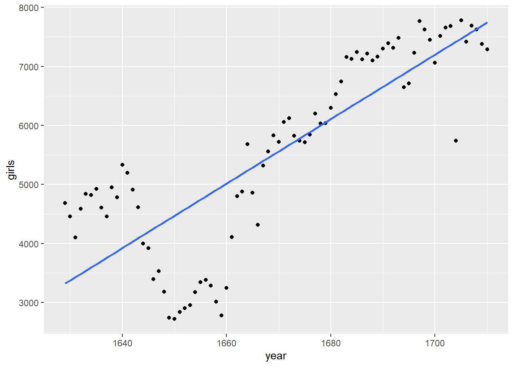
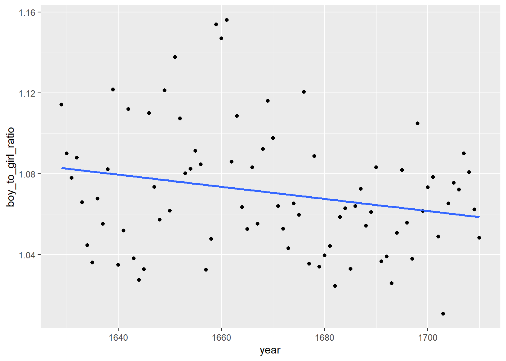
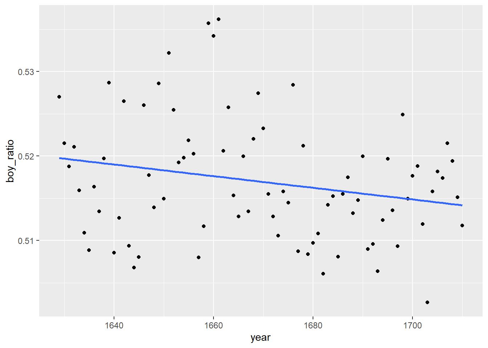
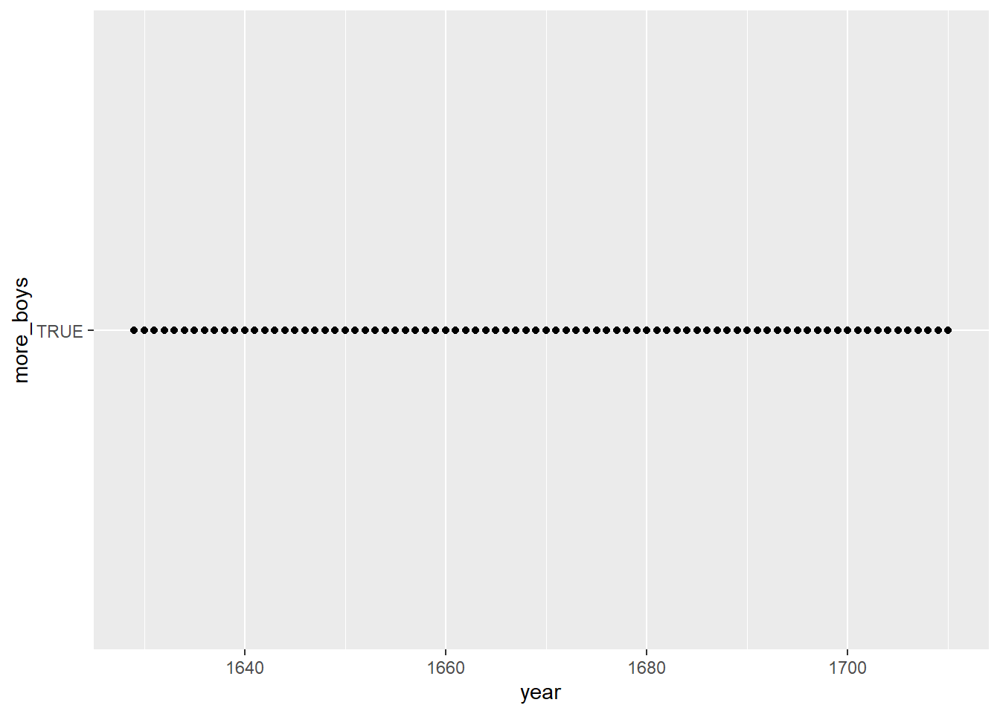

library(tidyverse)
library(openintro)Lab 1: Introduction to R and RStudio
Some Exploration
Loading packages
Loading arbuthnot
data('arbuthnot', package='openintro')Loading vector boys
arbuthnot$boys [1] 5218 4858 4422 4994 5158 5035 5106 4917 4703 5359 5366 5518 5470 5460 4793
[16] 4107 4047 3768 3796 3363 3079 2890 3231 3220 3196 3441 3655 3668 3396 3157
[31] 3209 3724 4748 5216 5411 6041 5114 4678 5616 6073 6506 6278 6449 6443 6073
[46] 6113 6058 6552 6423 6568 6247 6548 6822 6909 7577 7575 7484 7575 7737 7487
[61] 7604 7909 7662 7602 7676 6985 7263 7632 8062 8426 7911 7578 8102 8031 7765
[76] 6113 8366 7952 8379 8239 7840 7640Exercise 1:
What command would you use to extract just the counts of girls baptized? Try it!
arbuthnot$girls [1] 4683 4457 4102 4590 4839 4820 4928 4605 4457 4952 4784 5332 5200 4910 4617
[16] 3997 3919 3395 3536 3181 2746 2722 2840 2908 2959 3179 3349 3382 3289 3013
[31] 2781 3247 4107 4803 4881 5681 4858 4319 5322 5560 5829 5719 6061 6120 5822
[46] 5738 5717 5847 6203 6033 6041 6299 6533 6744 7158 7127 7246 7119 7214 7101
[61] 7167 7302 7392 7316 7483 6647 6713 7229 7767 7626 7452 7061 7514 7656 7683
[76] 5738 7779 7417 7687 7623 7380 7288# or better
length(arbuthnot$girls)[1] 82ggplot() geom_point
df_point <- ggplot(data = arbuthnot, aes(x = year, y = girls)) + geom_point()
df_point
ggplot() geom_line
df_line <- ggplot(data = arbuthnot, aes(x = year, y = girls)) + geom_line()
df_line
Using ?
?ggplotExercise: 2
Is there an apparent trend in the number of girls baptized over the years? How would you describe it? (To ensure that your lab report is comprehensive, be sure to include the code needed to make the plot as well as your written interpretation.)
df_line
# Looking at the chart, you can see there is a positive correlation, to make it easier to see we can do the following:
arbuthnot |>
ggplot(aes(x = year, y = girls)) + geom_point() + geom_smooth(method = lm, se = FALSE)`geom_smooth()` using formula = 'y ~ x'
There is a positive trend with year and girls, particularly among the later years. We can view this from the geom_line in the ggplot above, but we can also just double check by finding the correlation between girls and years:
cor(arbuthnot$year, arbuthnot$girls)[1] 0.8166907Adding vector ‘total’
arbuthnot <- arbuthnot %>%
mutate(total = boys + girls)
glimpse(arbuthnot)Rows: 82
Columns: 4
$ year <int> 1629, 1630, 1631, 1632, 1633, 1634, 1635, 1636, 1637, 1638, 1639…
$ boys <int> 5218, 4858, 4422, 4994, 5158, 5035, 5106, 4917, 4703, 5359, 5366…
$ girls <int> 4683, 4457, 4102, 4590, 4839, 4820, 4928, 4605, 4457, 4952, 4784…
$ total <int> 9901, 9315, 8524, 9584, 9997, 9855, 10034, 9522, 9160, 10311, 10…Plotting new vector
arbuthnot |>
ggplot(aes(x = year, y = total)) +
geom_line()
Adding vector boy_to_girl_ratio
arbuthnot <- arbuthnot |>
mutate(boy_to_girl_ratio = boys/girls)Plotting boy_to_girl_ratio
arbuthnot |>
ggplot(aes(x = year, y = boy_to_girl_ratio)) +
geom_point() +
geom_smooth(method = lm, se = FALSE)`geom_smooth()` using formula = 'y ~ x'
Adding vector boy_ratio
arbuthnot <- arbuthnot |>
mutate(boy_ratio = boys / total)Exercise 3
Now, generate a plot of the proportion of boys born over time. What do you see?
arbuthnot |>
ggplot(aes(x = year, y = boy_ratio)) +
geom_point() +
geom_smooth(method = lm, se = FALSE)`geom_smooth()` using formula = 'y ~ x'
Observation: The greater the year, the less boys are baptized.
Adding & plotting vector more_boys
arbuthnot <- arbuthnot |>
mutate(more_boys = boys > girls)
arbuthnot |>
ggplot(aes(x = year, y = more_boys)) +
geom_point()
Wasn’t expecting that…
with(arbuthnot, table(boys > girls))
TRUE
82 glimpse(arbuthnot)Rows: 82
Columns: 7
$ year <int> 1629, 1630, 1631, 1632, 1633, 1634, 1635, 1636, 1637…
$ boys <int> 5218, 4858, 4422, 4994, 5158, 5035, 5106, 4917, 4703…
$ girls <int> 4683, 4457, 4102, 4590, 4839, 4820, 4928, 4605, 4457…
$ total <int> 9901, 9315, 8524, 9584, 9997, 9855, 10034, 9522, 916…
$ boy_to_girl_ratio <dbl> 1.114243, 1.089971, 1.078011, 1.088017, 1.065923, 1.…
$ boy_ratio <dbl> 0.5270175, 0.5215244, 0.5187705, 0.5210768, 0.515954…
$ more_boys <lgl> TRUE, TRUE, TRUE, TRUE, TRUE, TRUE, TRUE, TRUE, TRUE…Seems like for each year, there are more boys than girls.
More Practice
Reassigning the data
data('present', package = 'openintro')